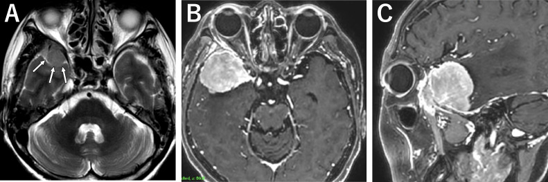
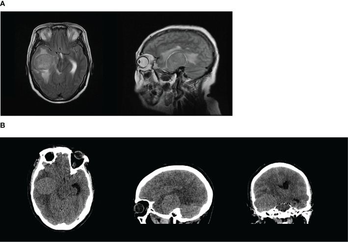
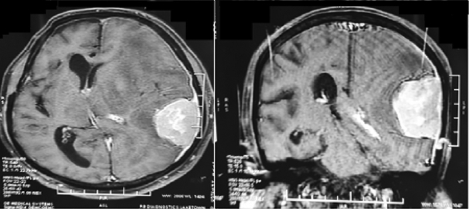

264 — U màng não do xạ trị (radiation-induced meningioma, RIM) / Radiation-induced meningioma
Tags: pattern:u-mang-nao pattern:ngoai-truc pattern:ngam-thuoc-dong-nhat pattern:duoi-mang-nao pattern:day-xuong pattern:nhieu-o pattern:trong-truong-chieu vung:manh-nao vung:vom-so vung:nen-so vung:canh-buom vung:nao score:WHO-2021 score:Simpson score:Cahan protocol:MRI-T1C protocol:CT-xuong protocol:MRI-sang-loc protocol:SRS protocol:DOTATATE-PET
Mức chắc chắn (certainty): tổng hợp y văn (literature synthesis) — 1 tổng quan 251 ca (World Neurosurg 2017), 2 đoàn hệ lớn người sống sót ung thư nhi (Neuro-Oncology 2019, PMC6380414; J Clin Oncol 2017, PMC5455703), 1 đoàn hệ đơn trung tâm 90 ca (J Cancer Res Clin Oncol 2015, PMC11823707), 1 loạt sàng lọc MRI 176 ca (2019), 1 tổng quan biến chứng sọ não do xạ (Neuroradiology 2021) và 3 ca nguyên văn có ảnh (Front Oncol 2024, PMC11246846 — CC BY; Radiol Case Rep 2024, PMC10770502 — CC BY; Asian J Neurosurg 2022, PMC9771624 — CC BY-NC-ND). Không có thử nghiệm ngẫu nhiên nào về theo dõi/điều trị RIM; mọi ngưỡng xử trí là tổng hợp đoàn hệ, chỗ suy luận được ghi rõ.
Câu chốt: RIM là u màng não mọc trong đúng trường chiếu cũ, sau một khoảng tiềm tàng tính bằng THẬP KỶ (trung bình 22,9 ± 11,4 năm; ngắn nhất ghi nhận 12 tháng, dài nhất 63 năm). Ba con số phải thuộc: (1) ở người sống sót ung thư nhi đã xạ sọ, nguy cơ tích lũy tới 12,4% ở năm thứ 40 sau chẩn đoán ban đầu (DCOG-LATER, 5.843 người); (2) 11,9% có nhiều u, 18,3% tái phát, và chỉ 140/205 (68%) là độ I — tức RIM hung hơn u màng não tự phát; (3) sống còn 5 năm 77,7% / 10 năm 66,1% — không phải "u lành cắt là xong". Sai lầm hay gặp: đọc khối dựa màng não ở người đã xạ sọ 20–30 năm trước như u màng não thường, cắt không lấy diện màng não–xương rộng, rồi tái phát nhiều lần trong mô đã xạ.
1. Tổng quan bệnh học – cơ chế hình ảnh – vì sao "do xạ"
1.1 Vì sao màng não là mô nhạy nhất với tia xạ
- U màng não là u não nguyên phát thường gặp nhất (13–26% u nội sọ nguyên phát); RIM là u não do tia xạ thường gặp nhất trong các u thần kinh thứ phát sau xạ.
- TẠI SAO màng não: tế bào nắp nhện (arachnoid cap cell) nằm sát xương–màng cứng, không có hàng rào máu–não bảo vệ, phân bào chậm nhưng tích lũy đột biến theo thời gian; xạ gây đứt sợi đôi DNA ở tế bào nền, chọn lọc dòng tế bào có mất NF2/22q (thường gặp ở RIM) → sau nhiều năm mới đủ khối nhìn thấy. Vì vậy: liều thấp vẫn gây bệnh (kể cả 1.367,3 mGy trong một ca can thiệp mạch não, Front Oncol 2024), nhưng liều cao rút ngắn tiềm tàng và làm u hung hơn.
- Vật lý hình ảnh (TẠI SAO trông như vậy): u màng não giàu tế bào + mao mạch có cửa sổ (fenestrated) → ngấm thuốc gadolinium mạnh, đồng nhất, sớm; không có hàng rào máu–não nên ngấm cả ở thì sớm và giữ lâu. Mô u đặc, ít nước tự do → T1 xấp xỉ chất xám, T2 xấp xỉ chất xám/giảm nhẹ, không hạn chế khuếch tán mạnh (khác áp-xe/lymphoma). Vôi hóa (tinh thể calci, T1/T2 đều tối, CT tăng đậm độ) gặp ở một phần u. Xương dưới u dày lên (hyperostosis) do tế bào u kích thích cốt bào → CT xương là cửa sổ bắt buộc, MRI một mình dễ bỏ.
- Vì sao RIM "nhiều ổ" và "hung": trường chiếu phủ nhiều màng cứng cùng lúc → nhiều ổ độc lập; mô nền đã xơ–giảm tưới máu, DNA tổn thương nhiều đợt → tỉ lệ độ II–III cao hơn u tự phát. Trong 251 ca: độ I 140, độ II 55, độ III 10; u hung và nhiều ổ gặp nhiều hơn ở nhóm liều trung bình–cao.
1.2 Ba mốc lịch sử phải nhớ khi đọc hồ sơ
- Tiêu chuẩn Cahan (1998) — 6 điều kiện, dùng để gọi tên một u là do xạ: (1) u nằm trong trường chiếu; (2) có khoảng tiềm tàng giữa xạ và u; (3) mô bệnh khác u nguyên phát trước đó; (4) bệnh nhân không có bệnh nền sinh u (NF2, xơ cứng củ, retinoblastoma...); (5) u không có trước khi xạ; (6) u không phải tái phát/di căn của u cũ.
- Phân loại theo liều Harrison: liều thấp < 10 Gy** (tinea capitis, X-quang nha khoa, can thiệp mạch), **trung bình 10–20 Gy** (u da đầu–cổ nông), **cao > 20 Gy (xạ trị u não, dự phòng sọ trong leukemia). Nhóm liều cao: tiềm tàng ngắn hơn, độ ác cao hơn, nhiều ổ hơn.
- Dịch tễ định lượng (dùng để tư vấn, không phải để trấn an):
- DCOG-LATER (5.843 người sống sót ung thư nhi, theo dõi trung vị 23,3 năm): 97 u màng não lành; nguy cơ tích lũy 12,4% (9,8–15,2%) ở 40 năm sau chẩn đoán ung thư đầu; ERR/Gy = 0,30; so với liều 1–19 Gy: không xạ HR 0,04, 40+ Gy HR 2,81 (1,30–6,08); xạ trước 5 tuổi HR 2,38 (1,39–4,07) so với 10–17 tuổi.
- CCSS (4.221 người đã xạ sọ): 199 u màng não ở 169 người; khoảng cách trung vị 22 năm (5–37); nguy cơ tích lũy tới 40 tuổi 5,6%; liều ≥ 30 Gy HR 2,6 (1,6–4,2) so với 1,5–19,9 Gy; 20% có di chứng thần kinh mới quanh lúc chẩn đoán (động kinh 8,3%).
- Đơn trung tâm Turin (90 người, theo dõi 24,6 năm): 15/90 (16,7%) có u màng não, trung vị 22,5 năm, 4 người nhiều u, 4/10 ca mổ là độ II, 5 u khổng lồ không triệu chứng.
2. Mẫu hình + chẩn đoán phân biệt theo vị trí (Gamut)
- Mẫu hình chốt: khối ngoài trục, dựa màng cứng, ngấm thuốc đồng nhất, bờ rõ, dấu đuôi màng não (dural tail), có thể dày xương dưới u, nằm gọn trong thể tích đã xạ — và không có trước trên phim cũ (đối chiếu ảnh cũ là bước 1, không phải bước phụ).
- Gamut theo vị trí trong trường chiếu:
- Liềm–vòm sọ (convexity/parasagittal): hay gặp nhất sau xạ toàn não; dễ thấy nhất, hay kèm phù não và động kinh.
- Cánh bướm xương bướm (sphenoid wing): thể en plaque, xâm lấn xương, lồi mắt — sau xạ hốc mắt (basedow, u hốc mắt) dễ bị nhầm là basedow tái phát (ca PMC10770502).
- Nền sọ–hố sau: sau xạ u tuyến yên/tủy nguyên bào; chèn ép dây thần kinh sọ, khó mổ hơn, hay tồn dư.
- Nhiều ổ (11,9%): nhiều màng cứng cùng lúc, kích thước khác nhau — không phải di căn nếu tất cả nằm trong trường chiếu cũ.
- Tủy sống (rất hiếm): u màng não trong trường chiếu cổ–ngực sau xạ lymphoma/Hodgkin — cùng nguyên lý, khác giải phẫu.
- Chẩn đoán phân biệt theo hình ảnh (khi đã có tiền sử xạ): u màng não tự phát (không phân biệt được trên ảnh — phải dựa vào vị trí trong trường chiếu + thời gian + phim cũ) · di căn màng cứng (thường nhiều ổ, phá xương, có u nguyên phát) · plasmacytoma/myeloma (tiêu xương, không dày xương) · lymphoma màng cứng (ngấm đồng nhất nhưng hạn chế khuếch tán, thường không dày xương) · u nguyên bào sợi đơn độc/SFT–hemangiopericytoma (giàu mạch, "chảy máu như núi lửa" trên DSA, tái phát cao) · sarcoma xương sọ do xạ (Cahan, phá xương ác tính, không phải u màng não) · hoại tử phóng xạ (bài 204: ngấm viền, không ngoài trục, tiến triển theo thời gian) · loạn sản sợi (fibrous dysplasia) và Paget (dày xương nhưng không có khối mô mềm ngấm thuốc) · meningocele giả sau mổ (dịch, không ngấm).
3. Bảng so sánh phân biệt (ma trận đối chiếu)
| Thực thể (entity) | Hình ảnh điển hình | Chốt vào (rule-in) | Chốt loại (rule-out) | Gợi ý xác nhận |
|---|---|---|---|---|
| RIM (u màng não do xạ) | Khối ngoài trục dựa màng cứng, ngấm thuốc đồng nhất, bờ rõ, trong trường chiếu cũ, có thể nhiều ổ, dày xương dưới u | Nằm đúng thể tích đã xạ + có trên phim mới, không có trên phim trước xạ + đủ 6 tiêu chuẩn Cahan | U trước khi xạ đã có; cùng mô bệnh với u cũ; ngoài trường chiếu | So phim/đĩa xạ cũ, tái tạo liều 3D; MRI T1+C; CT xương |
| U màng não tự phát | Cùng hình thái, thường một ổ, không liên quan trường chiếu | Vị trí ngoài thể tích đã xạ, không tiền sử xạ | Nhiều ổ trong trường chiếu + tiền sử xạ → nghi RIM | Hồ sơ xạ trị; theo dõi tốc độ mọc |
| Di căn màng cứng | Nhiều ổ màng cứng, phá xương, phù mô mềm, có u nguyên phát | Nhiều ổ ngoài trường chiếu + tiêu xương + u nguyên phát đang tiến triển | Dày xương + đuôi màng não + ổ đơn trong trường chiếu → RIM | PET/CT, sinh thiết nếu không điển hình |
| SFT/hemangiopericytoma | Khối ngoài trục giàu mạch, bờ chia múi, không vôi hóa, xâm lấn xương kiểu "gặm" | DSA: mạng mạch dày, tĩnh mạch dẫn sớm; tái phát nhanh | Ngấm đồng nhất đều, đuôi màng não → u màng não | Sinh thiết + STAT6; DSA trước mổ |
| Sarcoma xương sọ do xạ | Khối từ xương, phá vỏ xương, mô mềm lớn, không đuôi màng não | Phá xương ác tính + mô bệnh sarcoma, đủ Cahan | Dày xương đặc + khối màng não → RIM | CT xương, MRI, sinh thiết |
| Hoại tử phóng xạ (204) | Vùng ngấm viền không đều, phù trắng, co rút theo thời gian, trong mô đã xạ | Không có khối ngoài trục, tín hiệu thay đổi theo tháng, PET chưa chắc | Khối đặc ngoài trục, ngấm đồng nhất, có đuôi → u | MRI đa thời điểm, MRS/PET, hội chẩn |
| Loạn sản sợi xương sọ | Dày xương "kính mờ", không có khối mô mềm ngấm thuốc | CT: xương đặc đồng nhất, không phá vỏ, không mô mềm | Có thành phần mô mềm ngấm thuốc → u | CT xương là đủ |

(A) T2 axial: khối nhỏ 15 × 13 × 11 mm ở cánh bướm phải (mũi tên) — phát hiện tình cờ. (B, C) T1 sau tiêm gadolinium, axial và sagittal: cùng vị trí đã thành khối 38 × 38 × 41 mm, thể tích 31,3 cc, ngấm thuốc mạnh, phù não xung quanh. Nguồn: Radiol Case Rep 2024 (PMC10770502), CC BY 4.0.Dấu hiệu "đọc đúng" trên từng chuỗi
- T1 sau tiêm: ngấm đồng nhất, mạnh, giữ lâu; đuôi màng não (dural tail) là dấu gợi ý, không đặc hiệu (cũng gặp ở di căn màng cứng, lymphoma). Ngấm không đồng nhất + hoại tử trung tâm → nghĩ độ II–III, đặc biệt ở RIM.
- CT xương (bắt buộc): dày xương dưới u (hyperostosis) và xâm lấn xương thay đổi đường mổ (cần lấy xương); đồng thời phân biệt với sarcoma xương (phá xương) và loạn sản sợi (kính mờ).
- FLAIR/T2: phù não xung quanh không tương xứng kích thước u ở thể xâm lấn; thể en plaque có thể chỉ là dải dày màng cứng bám xương — dễ bỏ nhất trên MRI thường quy.
- DWI: không hạn chế khuếch tán mạnh; hạn chế rõ → nghĩ lymphoma/áp-xe, không phải u màng não điển hình.
- Mạch: u màng não giàu mạch nhưng không có "mạng mạch cuồng nộ" như SFT; nếu định mổ, chụp mạch/nút mạch khi u lớn, giàu mạch.
4. Protocol chụp + theo dõi + phân độ
- MRI sọ có cản quang là chuẩn: T1 trước tiêm, T1 sau tiêm 3 mặt phẳng, T2/FLAIR, DWI, SWI; lát ≤ 3 mm qua vùng nghi ngờ. CT xương lát mỏng cùng lúc nếu u sát xương/nền sọ.
- Tái tạo liều 3D từ kế hoạch xạ cũ (nếu còn dữ liệu): chứng minh u nằm trong ≥ 90% liều kê — đây là bằng chứng mạnh nhất cho "do xạ", hơn cả ký ức bệnh nhân.
- Theo dõi người đã xạ sọ: bắt đầu MRI sau ≥ 10 năm (các nghiên cứu sàng lọc dùng mốc 10 năm), lặp mỗi 3–5 năm; không dùng CT lặp (chính CT là nguồn liều) — đặc biệt ở người trẻ.
- Sàng lọc có lợi không? RCT sàng lọc không có: sàng lọc MRI phát hiện 21,4% (15/70) so với 8,5% (9/106) ở nhóm chỉ chụp khi có triệu chứng, u nhỏ hơn (1,6 vs 2,6 cm, p = 0,13) nhưng không giảm tỉ lệ cắt toàn bộ hay di chứng (p = 0,19; p = 0,28). → Sàng lọc là quyết định chia sẻ, không phải chỉ định cứng.
- Phân độ & điểm:
- WHO 2021 (u màng não): độ 1 (nhiều thể), độ 2 (không điển hình, tổn thương não xâm lấn, ≥ 4 phân bào/mm²), độ 3 (ác tính, nhú, tế bào sáng) — độ cao → tiềm tàng RIM ngắn hơn và tái phát nhiều hơn.
- Simpson (mức cắt): I–V; Simpson I (lấy cả màng cứng + xương) là mục tiêu với RIM vì diện cắm rộng và đã xạ.
- Cahan: tiêu chuẩn chẩn đoán (mục 1.2) — ghi vào hồ sơ, không chỉ ghi "u màng não".
- Sơ đồ quyết định (dùng cho hội chẩn):
flowchart TD
A[Khối dựa màng não ở người có tiền sử xạ sọ] --> B{Trong thể tích đã xạ + không có trên phim trước xạ?}
B -->|Không| C[U màng não tự phát: xử trí như u thường]
B -->|Có| D{Đủ 6 tiêu chuẩn Cahan?}
D -->|Không| E[Ghi u màng não nghi do xạ: theo dõi, tìm u nguyên phát khác]
D -->|Có| F{U lớn, có triệu chứng, phù não, xâm lấn xương?}
F -->|Có| G[Mổ: lấy màng cứng và xương dưới u theo Simpson I nếu an toàn]
F -->|Không| H{U nhỏ dưới 2 cm, không triệu chứng, người lớn?}
H -->|Có| I[MRI 6 tháng lần đầu, sau đó 1 năm; can thiệp khi mọc]
H -->|Không| J[SRS hoặc theo dõi tích cực theo tuổi và vị trí]
G --> K{Mô bệnh độ II-III hoặc tồn dư?}
K -->|Có| L[SRS bổ trợ hoặc xạ phân liều: tránh xạ lại toàn não]
K -->|Không| M[Theo dõi MRI 6-12 tháng]
Lưu ý về sơ đồ: RIM độ I vẫn có thể tái phát (18,3% trong 251 ca) — "độ I" không cho phép cắt tiết kiệm rồi thôi theo dõi.
5. Biến thể bình thường và cạm bẫy
- "U màng não" trên phim cũ nhưng không ai đối chiếu: RIM chỉ được chứng minh khi u không có trước khi xạ. Không có phim cũ → ghi "nghi do xạ", đừng khẳng định; nhưng cũng đừng bỏ yếu tố xạ khi lập kế hoạch mổ.
- En plaque cánh bướm sau xạ hốc mắt — bệnh cảnh lồi mắt tái phát sau xạ basedow: dễ bị coi là basedow bùng phát; MRI hốc mắt có cản quang là bước phân biệt (ca PMC10770502: u phát hiện ở tuổi 60, 18 năm sau xạ 20 Gy/10 lần, rồi to 38 mm trong 6 năm).
- Bỏ sót nhiều ổ: 11,9% có nhiều u → chụp toàn bộ não có cản quang, không chỉ vùng triệu chứng; ở trẻ đã xạ toàn não, đọc cả liềm, hố sau, nền sọ.
- Nhầm với tái phát u cũ: Cahan yêu cầu mô bệnh khác u trước đó. Ca PMC9771624: xạ phẫu thuật u tuyến yên tái phát → nhiều năm sau u màng não thể nhú độ III ở vòm sọ thái dương, chảy máu khoang mổ 2 lần và tử vong — "u mới" không hiền như tên gọi.
- Nhầm với hoại tử phóng xạ (204): hoại tử không tạo khối ngoài trục có đuôi màng não; ngấm viền, co rút theo tháng. Điều trị ngược nhau (mổ vs corticoid/theo dõi).
- Tăng sinh xương sau xạ (dày xương vòm, "calvarial thickening") là biến đổi lành tính, không phải u — không sinh thiết chỉ vì xương dày; chỉ sinh thiết khi có thành phần mô mềm.
- Trẻ em: sau xạ sọ, dày xương + thay đổi da đầu có thể che u nhỏ; MRI là phương thức theo dõi, không phải CT (ALARA, và chính CT góp liều).
- Cạm bẫy "u nhỏ = lành": ca Turin có 5 u khổng lồ không triệu chứng; ca Front Oncol 2024 u 5,1 × 4,1 cm gây tụt tri giác GCS 6 trong vài ngày. Kích thước không dự báo được triệu chứng.
6. Tự lượng giá — Blind Quiz
Ca 1 — Nữ 69 tuổi, 27 năm trước xạ 20 Gy/10 lần vùng sau hốc mắt vì basedow, nay khối cánh bướm phải. Nhìn ảnh trước, mô tả trước.
- Gợi ý lâm sàng: không đau đầu, không nhìn đôi; u phát hiện tình cờ trên MRI 10 năm trước.
- Hỏi: (1) Khối ở đâu, chuỗi xung nào? (2) Vì sao gọi là do xạ chứ không phải u thường? (3) Kế hoạch tiếp theo?
Bấm để hiện đáp án (findings + chẩn đoán)
- Findings: (A) T2 axial: khối 15 × 13 × 11 mm cánh bướm phải, đồng tín hiệu chất xám, bờ rõ. (B, C) T1 sau gadolinium: khối 38 × 38 × 41 mm, 31,3 cc, ngấm mạnh đồng nhất, phù não xung quanh mức trung bình, bám màng cứng cánh bướm.
- Chẩn đoán: u màng não do xạ (RIM), mô bệnh độ II không điển hình.
- Vì sao: u nằm đúng trường chiếu 20 Gy (song song đối diện sau hốc mắt), không có trên CT lúc xạ, mô bệnh khác bệnh nền (basedow không phải u) → đủ Cahan. Tốc độ: 15 mm → 38 mm trong 6 năm (~3,8 mm/năm) — nhanh hơn u lành điển hình, phù hợp độ II.
- Nguồn: Radiol Case Rep 2024 (PMC10770502), CC BY 4.0. Phản biện: ca này là ca thứ hai trong y văn về RIM sau xạ basedow; kết luận "do xạ" dựa trên vị trí + tiềm tàng, không có liều 3D tái tạo.
Ca 2 — Nam 56 tuổi, can thiệp nút túi phình mạch não 2,5 năm trước (tổng liều 1.367,3 mGy), nay lú lẫn – liệt nửa người trái.

- Hỏi: (1) Mô tả khối và hiệu ứng choán chỗ. (2) Vì sao đây là tiềm tàng ngắn bất thường và điều đó nói gì về liều thấp? (3) Xử trí cấp?
Bấm để hiện đáp án
- Findings: khối 5,1 × 4,1 cm thùy thái dương phải, bờ rõ, đè đẩy đường giữa 0,5 cm, chèn ép não thất bên phải; trên CT không cản quang khối giảm đậm độ nhẹ, phù não xung quanh.
- Chẩn đoán: RIM thể khổng lồ, độ I (meningothelial), sau can thiệp mạch não 2,5 năm — tiềm tàng ngắn nhất được báo cáo (kinh điển 12 tháng–63 năm, trung bình 22,9 năm).
- Ý nghĩa: liều 1.367,3 mGy (thấp) vẫn đủ gây u → liều không có ngưỡng an toàn tuyệt đối; tối ưu hóa liều can thiệp là việc của bác sĩ CĐHA can thiệp.
- Xử trí: mổ cấp cứu lấy u + giải ép; mô bệnh độ I; tác giả khuyến cáo tránh xạ bổ trợ cho RIM độ I đã lấy toàn bộ.
- Nguồn: Front Oncol 2024 (PMC11246846), CC BY 4.0.
Ca 3 — Nam 69 tuổi, xạ phẫu thuật u tuyến yên tái phát nhiều năm trước, nay khối vòm sọ thái dương trái.

- Hỏi: (1) Dấu hiệu nào chốt u ngoài trục? (2) Vì sao tiền sử xạ u tuyến yên vẫn tính là "cùng trường chiếu"? (3) Điều gì khiến ca này khác u màng não thường?
Bấm để hiện đáp án
- Findings: khối ngoài trục, dựa màng cứng vòm sọ thái dương trái, ngấm thuốc mạnh đồng nhất, đuôi màng não hướng về liềm, đè đẩy đường giữa sang phải, phù não trắng xung quanh.
- Chẩn đoán: RIM độ III — u màng não thể nhú (papillary), sau xạ phẫu thuật u tuyến yên.
- Vì sao khác: độ III (hiếm), chảy máu khoang mổ 2 lần sau phẫu thuật và tử vong; đúng như dữ liệu 251 ca — RIM hung hơn, tái phát 18,3%, sống 10 năm 66,1%.
- Nguồn: Asian J Neurosurg 2022 (PMC9771624), CC BY-NC-ND 4.0 (nguyên bản, không cắt ghép).
Bài liên quan chéo
- 213 – U não: GBM vs di căn vs lymphoma vs áp-xe (khối nội trục, phân biệt nền)
- 204 – Hoại tử phóng xạ sau xạ trị u não (chẩn đoán ngược)
- 260 – Hẹp động mạch cảnh ngoài sọ do xạ
- 262 – Bệnh mạch máu lớn do xạ trị não
- 268 – Bệnh tủy do xạ trị (cùng nguyên lý "trong trường chiếu")
- 240 – Schwannoma tiền đình: SRS vs mổ
- 201 – Protocol sọ não
Không dùng để chẩn đoán độc lập khi chưa có người hướng dẫn.